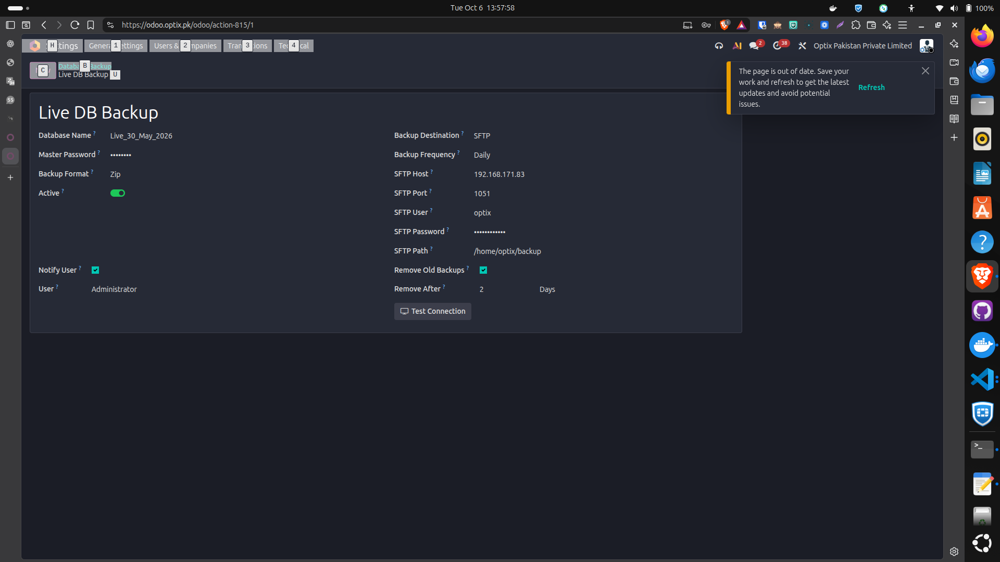
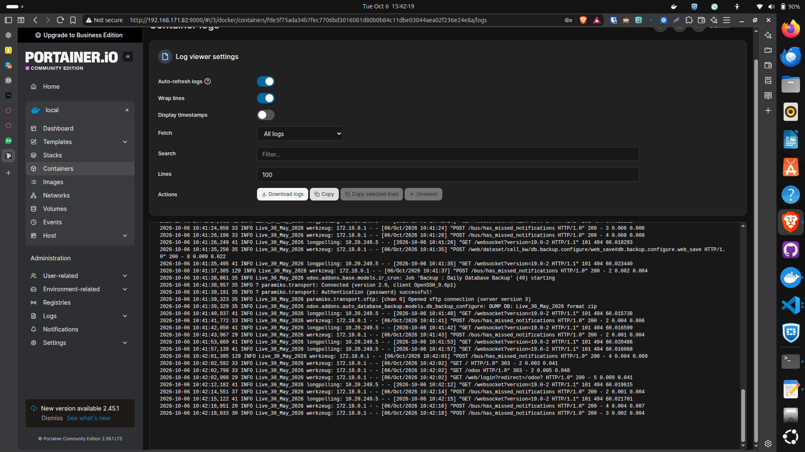
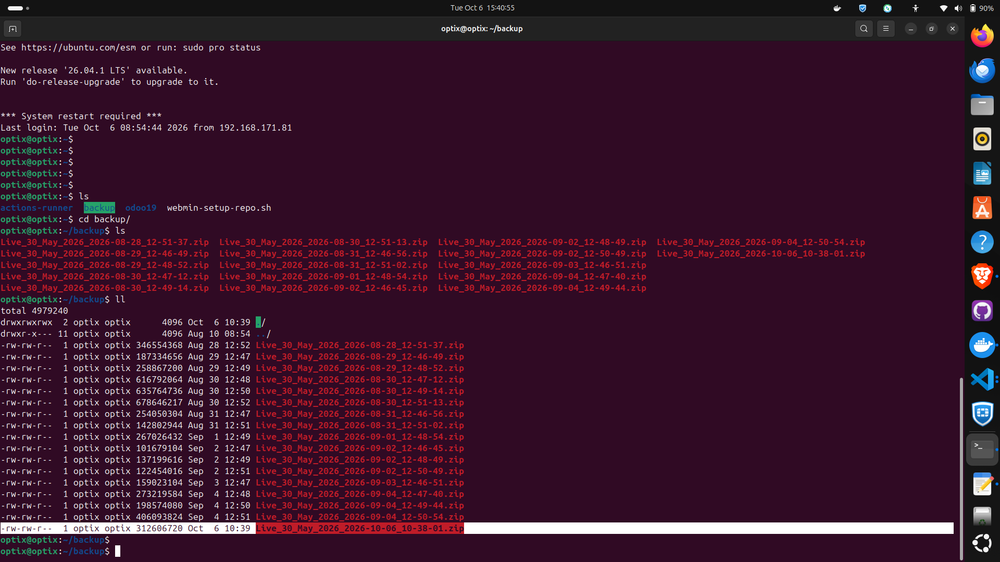

This document records the auto_database_backup configuration shown in the supplied screenshot. The live database is configured for daily ZIP backups to an SFTP server, with automated cleanup after two days and notifications to Administrator.
| Setting | Configured value |
|---|---|
| Configuration name | Live DB Backup |
| Database name | Live_30_May_2026 |
| Master password | Configured; masked in the screenshot |
| Backup format | Zip |
| Active | Enabled |
| Backup destination | SFTP |
| Backup frequency | Daily |
| SFTP host | 192.168.171.83 |
| SFTP port | 1051 |
| SFTP user | optix |
| SFTP password | Configured; masked in the screenshot |
| SFTP path | /home/optix/backup |
| Remove old backups | Enabled |
| Remove after | 2 days |
| Notify user | Enabled |
| Notification user | Administrator |
/home/optix/backup on 192.168.171.83:1051 using the SFTP account optix.Archive names follow Live_30_May_2026_YYYY-MM-DD_HH-MM-SS.zip. The timestamp in the filename is generated in UTC. Retention is age based; it does not guarantee that exactly two backup files remain.
Use a dedicated backup directory: the SFTP cleanup code evaluates all entries in the configured directory without filtering by database name or filename extension. Do not mix unrelated files into this path.
For connection failures, check network reachability, port 1051 and credentials. For upload failures, check directory permissions and free space. For dump failures, review Odoo logs and PostgreSQL dump access. For missing attachments, verify the source filestore and the restored archive.
The original screenshot below is supplied as the configuration reference. Both password fields are masked.

The screenshot shows the configuration record, but no successful connection test, backup archive, notification, scheduled execution time or restore result. The additional evidence on the following pages shows backup-related log generation and a stored ZIP archive. Notification delivery, cleanup execution and restoration remain unverified.
Process details were checked against the local module files auto_database_backup/models/db_backup_configure.py and auto_database_backup/data/ir_cron_data.xml. Live deployment behavior depends on the installed code and its scheduled action settings.
The Portainer container log screenshot captured on 06 October 2026 shows that backup-related logs are being generated for Live_30_May_2026.

| Log timestamp — 06 October 2026 | Observed event |
|---|---|
| 10:41:38,861 | Job 'Backup : Daily Database Backup' (49) starting |
| 10:41:38,957 | SSH connection established (OpenSSH_9.6p1) |
| 10:41:39,191 | Authentication (password) successful! |
| 10:41:39,323 | Opened SFTP connection (server version 3) |
| 10:41:39,329 | DUMP DB: Live_30_May_2026 format zip |
The visible entries establish that the daily backup job started, SFTP authentication succeeded and ZIP database dumping began. A completion message is not visible in this excerpt. Log timestamps are reproduced as displayed; the screenshot does not specify their timezone.
The log excerpt starts at 10:41, whereas the archive on the next page is named 10:38:01. These screenshots document log activity and archive availability separately; they do not establish that both belong to the same execution.
The terminal screenshot captured on 06 October 2026 shows a ZIP backup stored on the Optix server. The latest archive visible in the supplied listing is:
Live_30_May_2026_2026-10-06_10-38-01.zip

| Item | Recorded detail |
|---|---|
| Latest archive shown | Live_30_May_2026_2026-10-06_10-38-01.zip |
| File size shown | 312,606,720 bytes (approximately 298.1 MiB) |
| Owner / group | optix / optix |
| Modification time shown | 06 October, 10:39 (terminal timezone not specified) |
| Directory shown in terminal | /home/optix/backup (prompt: optix@optix:~/backup) |
| Additional staging location | /home/optix/database — latest backup also stored here, as confirmed by the administrator |
The configured SFTP destination and terminal listing refer to /home/optix/backup. The administrator reports that the latest backup is also in /home/optix/database on the Optix staging server; that additional directory is not shown in the screenshot.
The listing demonstrates archive presence and a non-zero file size. It also contains older archives despite the configured two-day retention; this evidence does not confirm cleanup execution or archive restorability. “Latest” refers to the supplied 06 October listing.